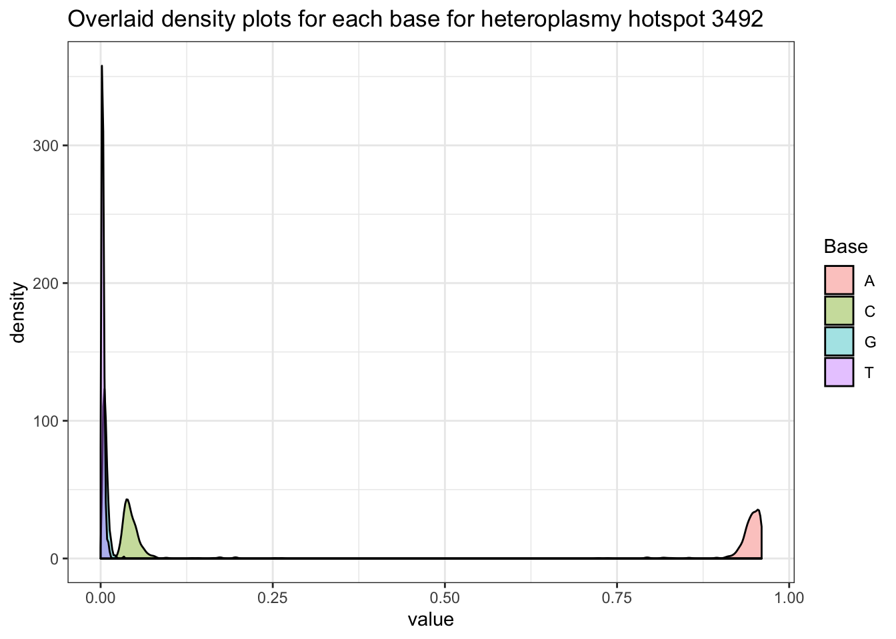

Modeling heterolasmy in mtDNA
Soumik Purkayastha
03/04/2020
Last updated: 2020-03-04
Checks: 6 1
Knit directory: heteroplasmy/
This reproducible R Markdown analysis was created with workflowr (version 1.6.0). The Checks tab describes the reproducibility checks that were applied when the results were created. The Past versions tab lists the development history.
Great! Since the R Markdown file has been committed to the Git repository, you know the exact version of the code that produced these results.
Great job! The global environment was empty. Objects defined in the global environment can affect the analysis in your R Markdown file in unknown ways. For reproduciblity it’s best to always run the code in an empty environment.
The command set.seed(20200123) was run prior to running the code in the R Markdown file. Setting a seed ensures that any results that rely on randomness, e.g. subsampling or permutations, are reproducible.
Great job! Recording the operating system, R version, and package versions is critical for reproducibility.
- chunk1
- chunk2
To ensure reproducibility of the results, delete the cache directory first-analysis_cache and re-run the analysis. To have workflowr automatically delete the cache directory prior to building the file, set delete_cache = TRUE when running wflow_build() or wflow_publish().
Great job! Using relative paths to the files within your workflowr project makes it easier to run your code on other machines.
Great! You are using Git for version control. Tracking code development and connecting the code version to the results is critical for reproducibility. The version displayed above was the version of the Git repository at the time these results were generated.
Note that you need to be careful to ensure that all relevant files for the analysis have been committed to Git prior to generating the results (you can use wflow_publish or wflow_git_commit). workflowr only checks the R Markdown file, but you know if there are other scripts or data files that it depends on. Below is the status of the Git repository when the results were generated:
Ignored files:
Ignored: .DS_Store
Ignored: .RData
Ignored: .Rhistory
Ignored: analysis/.RData
Ignored: analysis/.Rhistory
Ignored: analysis/first-analysis_cache/
Untracked files:
Untracked: analysis/first-code.R
Untracked: analysis/previous-work.Rmd
Untracked: code/first-code.R
Untracked: code/heteroSites.R
Untracked: distPlots/
Untracked: graphs/
Untracked: output/heteroData.csv
Untracked: output/heteroSites.RData
Note that any generated files, e.g. HTML, png, CSS, etc., are not included in this status report because it is ok for generated content to have uncommitted changes.
These are the previous versions of the R Markdown and HTML files. If you’ve configured a remote Git repository (see ?wflow_git_remote), click on the hyperlinks in the table below to view them.
| File | Version | Author | Date | Message |
|---|---|---|---|---|
| Rmd | 59e0e49 | soumikp | 2020-03-04 | previous work added |
| html | 59e0e49 | soumikp | 2020-03-04 | previous work added |
| html | a4cd3ab | soumikp | 2020-03-04 | Build site. |
| Rmd | 9d74ab0 | soumikp | 2020-03-04 | wflow_git_commit(all = T) |
| html | 9d74ab0 | soumikp | 2020-03-04 | wflow_git_commit(all = T) |
| html | 25104c9 | soumikp | 2020-01-23 | Build site. |
| Rmd | 8cc8096 | soumikp | 2020-01-23 | density at heteroplasmic hotspots seen |
| html | 8cc8096 | soumikp | 2020-01-23 | density at heteroplasmic hotspots seen |
| html | fa83f7c | soumikp | 2020-01-23 | Build site. |
| Rmd | 6369635 | soumikp | 2020-01-23 | heteroplasmic sites found |
| html | 6369635 | soumikp | 2020-01-23 | heteroplasmic sites found |
| html | 43c6892 | soumikp | 2020-01-23 | Build site. |
| Rmd | 660f408 | soumikp | 2020-01-23 | heteroplasmic sites found |
| html | 660f408 | soumikp | 2020-01-23 | heteroplasmic sites found |
| html | 5bd2943 | soumikp | 2020-01-23 | Build site. |
| Rmd | 8e4fcd7 | soumikp | 2020-01-23 | ready to start work |
| html | 8e4fcd7 | soumikp | 2020-01-23 | ready to start work |
| html | 5d5b9ee | soumikp | 2020-01-23 | Build site. |
| Rmd | 4138239 | soumikp | 2020-01-23 | ready to start work |
| html | 4138239 | soumikp | 2020-01-23 | ready to start work |
| html | 34d6d0a | soumikp | 2020-01-23 | workflow guide R code added |
| html | f468811 | soumikp | 2020-01-23 | wflow_git_commit(all = TRUE) |
| html | 4b45677 | soumikp | 2020-01-23 | Build site. |
| Rmd | e8e6ecd | soumikp | 2020-01-23 | Add my first analysis |
Data processing
- Get 700 randomly chosen individuals with count data for 16569 bases.
- A typical individual has a 4 * 16569 matrix of count data.
- Transform count matrix to proportion matrix.
- Current definition of heteroplasmy: most prevalent base has frequency \(<96\%\)
Searching for heteroplasmy hotspots
- For each of the 16569 bases, get individual level information.
- Get count of how many individuals exhibit heterplasmy at that site.
- Set cut-off of \(>100\) individuals to classify a site as a heteroplasmy hotspot.
- Plot of heteroplasmy hotspots given below.

Warning: The above code chunk cached its results, but it won’t be re-run if previous chunks it depends on are updated. If you need to use caching, it is highly recommended to also set knitr::opts_chunk$set(autodep = TRUE) at the top of the file (in a chunk that is not cached). Alternatively, you can customize the option dependson for each individual chunk that is cached. Using either autodep or dependson will remove this warning. See the knitr cache options for more details.
Distribution of bases at heteroplasmy hotspots
- For any heteroplasmy hotspot, select all ‘heteroplasmic individuals’.
- For each person, calculate proportion of each of the 4 bases.
- For each base, get density plot of the calculated proportions.
- Generate overlaid version of the 4 density plots obtained.
An example is given below.

Warning: The above code chunk cached its results, but it won’t be re-run if previous chunks it depends on are updated. If you need to use caching, it is highly recommended to also set knitr::opts_chunk$set(autodep = TRUE) at the top of the file (in a chunk that is not cached). Alternatively, you can customize the option dependson for each individual chunk that is cached. Using either autodep or dependson will remove this warning. See the knitr cache options for more details.
The cluster is now running a Shiny app which gives us the above figure for each position, for all the individuals in the dataset. Click here to load the app.
sessionInfo()R version 3.6.2 (2019-12-12)
Platform: x86_64-apple-darwin15.6.0 (64-bit)
Running under: macOS Catalina 10.15.3
Matrix products: default
BLAS: /Library/Frameworks/R.framework/Versions/3.6/Resources/lib/libRblas.0.dylib
LAPACK: /Library/Frameworks/R.framework/Versions/3.6/Resources/lib/libRlapack.dylib
locale:
[1] en_US.UTF-8/en_US.UTF-8/en_US.UTF-8/C/en_US.UTF-8/en_US.UTF-8
attached base packages:
[1] stats graphics grDevices utils datasets methods base
other attached packages:
[1] forcats_0.4.0 stringr_1.4.0 dplyr_0.8.3 purrr_0.3.3
[5] readr_1.3.1 tidyr_1.0.0 tibble_2.1.3 ggplot2_3.2.1
[9] tidyverse_1.3.0
loaded via a namespace (and not attached):
[1] tidyselect_0.2.5 xfun_0.12 haven_2.2.0 lattice_0.20-38
[5] colorspace_1.4-1 vctrs_0.2.1 generics_0.0.2 htmltools_0.4.0
[9] yaml_2.2.0 rlang_0.4.2 later_1.0.0 pillar_1.4.3
[13] withr_2.1.2 glue_1.3.1 DBI_1.1.0 dbplyr_1.4.2
[17] modelr_0.1.5 readxl_1.3.1 lifecycle_0.1.0 munsell_0.5.0
[21] gtable_0.3.0 workflowr_1.6.0 cellranger_1.1.0 rvest_0.3.5
[25] evaluate_0.14 knitr_1.27 httpuv_1.5.2 fansi_0.4.0
[29] broom_0.5.3 Rcpp_1.0.3 promises_1.1.0 backports_1.1.5
[33] scales_1.1.0 jsonlite_1.6 fs_1.3.1 hms_0.5.2
[37] digest_0.6.23 stringi_1.4.5 grid_3.6.2 rprojroot_1.3-2
[41] cli_2.0.0 tools_3.6.2 magrittr_1.5 lazyeval_0.2.2
[45] crayon_1.3.4 whisker_0.4 pkgconfig_2.0.3 zeallot_0.1.0
[49] xml2_1.2.2 reprex_0.3.0 lubridate_1.7.4 rstudioapi_0.10
[53] assertthat_0.2.1 rmarkdown_2.1 httr_1.4.1 R6_2.4.1
[57] nlme_3.1-142 git2r_0.26.1 compiler_3.6.2